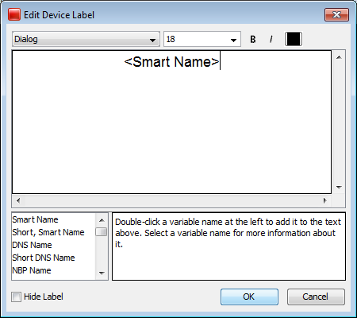
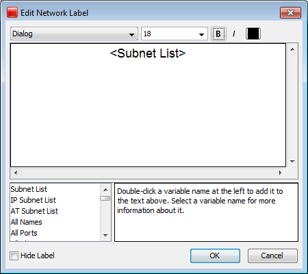

Editing Labels
Use the Label...
command, available from the Format menu (Cmd/Ctrl-L) to edit the labels for
the selected map objects. You can edit the label for a single device or network from the Device or Network Info window.
Every item on a map has its own descriptive label. InterMapper creates a
default label showing the device's full DNS name or IP address(es).
To edit a map object's label:
- Make sure the map is in Edit
mode.
- Select one or more map objects.
- From the Format menu, choose Label...
(Cmd/Ctrl-L).
Depending on the object you select, the Edit Device Label dialog or
the Edit Network Label dialog appears, as shown below.
- Enter label data as follows:
- Enter text in the Label dialog's text box.
- Double-click on any variable names in the list at
the lower-left to insert that value into the item's label.
- Select Hide Label if desired. (See below.)
For example, the device in the Edit Device Label window uses the short,
smart name (the leftmost part of the full domain name). The network shown in
the Edit Network Label window has a static (unchanging) label of "Our
ISP", and a list of all the subnets in the network shown on the next
line.
Note: You can also use InterMapper variables and Javascript to insert information dynamically into a device label. For more information, see Dynamic Label & Alert Text (Pg 1).
|

The Edit Device Label window
|

The Edit Network Label window
|
Hiding a Device or Network Label
In some cases you may not want a label to show at all.
You can hide the label for any device or network unless the icon is set to:
- Rectangle
- Oval
- Cloud
- Text
To hide the label for a device or network:
- From the Format menu, choose Icon... The Select an Icon window appears.
- Choose an icon other than one mentioned above and click OK. The icon appears for the selected device or network.
- From the Monitor menu, choose Label... The Edit Device Label or Edit Network Label window appears.
- Select the Hide Label check box and click OK. The label for the selected device or network disappears.